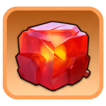
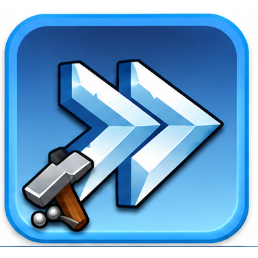
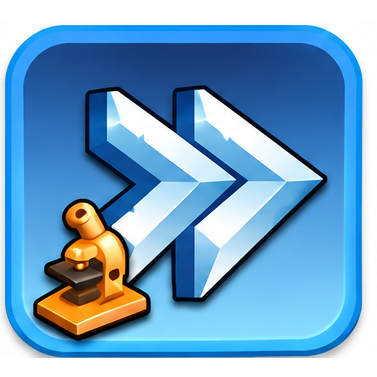
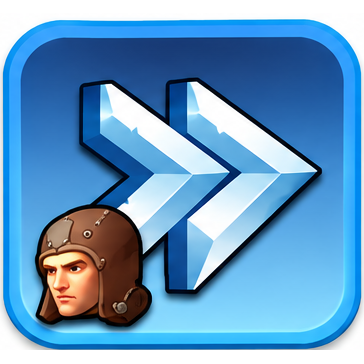

Подготовка к SvS
Подготовка к SvS — соревновательная стадия между двумя государствами перед основной битвой.
Подготовка к SvS
Автор - Sova
Подготовка к SvS — соревновательная стадия между двумя государствами перед основной битвой.
В течение пяти основных дней игроки набирают очки за развитие города, героев, войск, питомцев, Экспертов и другие действия.
Главная идея подготовки: не тратить ценные материалы сразу после получения, а использовать их в тот день, когда за них дают очки.
Официально вся подготовительная фаза длится примерно 5 дней + 10 часов. После неё начинается боевая стадия SvS.
ПЕРЕД НАЧАЛОМ
Перед каждой подготовкой обязательно проверяйте список заданий непосредственно в игре.
Для 58 государства это главный источник.
По мере развития государства в задания могут добавляться:

новые типы Огненных кристаллов;- питомцы;
- Эксперты;
- новые материалы улучшения;
- другие системы развития.
Поэтому старые таблицы из ранних государств могут быть неполными.
ДЕНЬ 1 — РАЗВИТИЕ ГОРОДА
Основной упор первого дня — развитие города и связанные ускорения.
Очки могут давать:
- использование Огненных кристаллов;
- использование Очищенных огненных кристаллов;
- использование осколков Огненных кристаллов;

ускорения строительства;
ускорения исследований;
ускорения обучения и повышения войск;- ускорения изучения навыков Экспертов;
- развитие талисманов губернатора.
КАК ИГРАТЬ ДЕНЬ 1
Лучше заранее подготовить крупные улучшения зданий.
Перед нажатием последнего улучшения проверьте:
- активные государственные бонусы;
- распоряжения;
- бонусы питомцев;
- бонусы Экспертов;
- другие доступные ускорения строительства.
Если вам не нужно бороться за высокий рейтинг, необязательно использовать все виды ускорений уже в первый день.
Многие из них снова принесут очки позже.
ДЕНЬ 2 — СБОР И РАЗВИТИЕ
Во второй день появляется значительно больше способов набора очков.
Обычно учитываются:
- сбор ресурсов на карте;
- вращения Колеса фортуны;
- использование подходящих фрагментов героев;
- Огненные кристаллы;
- Очищенные огненные кристаллы;
- осколки Огненных кристаллов;
- ускорения строительства;
- ускорения исследований;
- ускорения обучения;
- ускорения изучения навыков Экспертов;
- Печати Экспертов;
- Книги знаний.
ХИТРОСТЬ СО СБОРОМ
Не обязательно начинать сбор только после начала второго дня.
Ещё вечером первого дня можно отправить отряды на большие ресурсные точки.
Рассчитайте поход так, чтобы они вернулись уже после начала второго дня.
Тогда большая часть работы будет выполнена заранее, а ресурсы сразу принесут очки.
КОЛЕСО ФОРТУНЫ
Колесо учитывается и во второй, и в третий день.
Поэтому не обязательно делать все вращения сразу.
Можно: основную часть прокрутить во вторник → остаток оставить на среду.
Так проще распределять очки между днями.
ФРАГМЕНТЫ ГЕРОЕВ
Не используйте ценные фрагменты заранее.
Сначала откройте правила текущего дня и убедитесь, что выбранный тип фрагментов действительно учитывается.
Особенно осторожно относитесь к универсальным фрагментам.
Не расходуйте их только потому, что в старой таблице написано «фрагменты героев».
ДЕНЬ 3 — ОХОТА
Третий день в основном связан с активностью в мире.
Очки дают:
- убийство зверей;
- рейды на Полярного ужаса;
- развитие питомцев;
- совершенствование питомцев;
- талисманы губернатора;
- Колесо фортуны;
- фрагменты героев;
- Печати Экспертов;
- Книги знаний.
ЭНЕРГИЯ
Перед третьим днём не расходуйте всю энергию без необходимости.
Полезно заранее сохранить:
- бесплатную энергию;
- предметы восстановления энергии;
- дополнительные источники энергии.
Во время охоты выбирайте героев и бонусы, которые уменьшают расход энергии, если они доступны вашему аккаунту.
Чем больше полезных атак вы проведёте на один запас энергии, тем выше результат.
ПИТОМЦЫ В СРЕДУ ИЛИ ПЯТНИЦУ?
Питомцы дают очки и в третий, и в пятый день.
Поэтому нет обязательного правила: «в среду питомцев вообще не качать».
Выбор зависит от ситуации.
Если государству нужны очки сейчас: можно использовать часть материалов в среду.
Если запас небольшой и срочности нет: сохранить основную часть на пятницу.
Главное — не расходовать всё автоматически.
ДЕНЬ 4 — ВОЕННАЯ ПОДГОТОВКА
Четвёртый день особенно важен для армии.
Основные источники очков:
- обучение войск;
- повышение войск;
- улучшение талисманов губернатора;
- Камни эссенции экипировки героев;
- Виджеты эксклюзивного снаряжения героев;
- Мифрил.
 Камни эссенции экипировки героев;
Камни эссенции экипировки героев; Мифрил.
Мифрил.ОБУЧЕНИЕ И ПОВЫШЕНИЕ ВОЙСК
Это основной день для массовой работы с армией.
Лучше заранее:
- накопить ускорения обучения;
- подготовить войска низших уровней для повышения;
- проверить государственные бонусы;
- дождаться команды руководства государства.
Особенно выгодно совмещать крупные повышения с активными бонусами к обучению.
МАТЕРИАЛЫ ГЕРОЕВ
Необязательно использовать в четверг все:
- Камни эссенции;
- Виджеты;
- Мифрил.
Эти материалы снова могут приносить очки в пятницу.
Если дневная задача уже выполнена, остаток лучше сохранить.
ДЕНЬ 5 — ФИНАЛЬНЫЙ РЫВОК
Пятый день объединяет большое количество систем развития.
Обычно очки дают:
- развитие питомцев;
- совершенствование питомцев;
- повышение показателя снаряжения губернатора;
- Камни эссенции;
- Виджеты эксклюзивного снаряжения героев;
- Мифрил;
- Огненные кристаллы;
- Очищенные огненные кристаллы;
- осколки Огненных кристаллов;
- ускорения строительства;
- ускорения исследований;
- ускорения обучения;
- ускорения изучения навыков Экспертов.
ПЯТНИЦА НЕ ОЗНАЧАЕТ «ПОТРАТИТЬ ВСЁ»
Пятый день действительно удобен для сильного финального рывка.
Но не нужно автоматически опустошать весь склад.
Если:
- государство уже уверенно ведёт;
- ваши сундуки закрыты;
- нужный личный рейтинг достигнут;
- следующий уровень награды требует слишком больших затрат,
лучше остановиться.
Следующий SvS тоже придёт.
ЭКСПЕРТЫ
Эксперты теперь являются отдельной частью подготовки.
В зависимости от дня очки могут давать:
- ускорения изучения навыков Экспертов;
- использование Печатей Экспертов;
- использование Книг знаний.
Не расходуйте эти материалы сразу после получения.
Сначала проверьте текущий день SvS.
ЧТО КОПИТЬ ЗАРАНЕЕ
Перед подготовкой полезно сохранять:
- ускорения строительства;
- ускорения исследований;
- ускорения обучения;
- Огненные кристаллы;
- Очищенные огненные кристаллы;
- осколки Огненных кристаллов;
- фрагменты героев;
- ресурсы для Колеса фортуны;
- Печати Экспертов;
- Книги знаний;
- ускорения навыков Экспертов;
- материалы талисманов;
- материалы снаряжения губернатора;
- Камни эссенции;
- Виджеты героев;
- Мифрил;
- материалы развития питомцев;
- энергию и предметы её восстановления.
НЕ ГОНЯЙТЕСЬ ЗА ОЧКАМИ БЕЗ ЦЕЛИ
Перед каждой крупной тратой задайте себе вопрос: что именно я получу за эти ресурсы?
Есть несколько возможных целей:
- закрыть личные сундуки;
- попасть в личный рейтинг;
- помочь альянсу;
- помочь государству выиграть подготовительную фазу.
Если нужная цель уже достигнута, дальнейший расход может оказаться невыгодным.
ЭТО КОМАНДНОЕ СОБЫТИЕ
Подготовка к SvS отличается от обычного события развития.
Здесь результат важен не только для одного игрока.
Очки участников формируют общий результат альянсов и государства.
Поэтому при серьёзной борьбе лучше ориентироваться на указания руководства государства.
Иногда выгоднее придержать ресурсы утром и использовать их позже, когда станет понятно, сколько очков действительно необходимо.
КРАТКО ПО ДНЯМ
День 1
Город + Огненные кристаллы + ускорения + талисманы + навыки Экспертов
День 2
Сбор + Колесо + герои + Эксперты + Огненные кристаллы + ускорения
День 3
Охота + Полярный ужас + питомцы + Колесо + герои + Эксперты
День 4
Войска + талисманы + экипировка героев
День 5
Питомцы + снаряжение губернатора + экипировка героев + Огненные кристаллы + ускорения
ЧАСТЫЕ ОШИБКИ
- Тратить ресурсы сразу после получения.
- Использовать все ускорения в первый день.
- Забыть заранее отправить сборщиков перед вторником.
- Потратить все вращения Колеса во второй день.
- Использовать фрагменты, не проверив, дают ли они очки.
- Потратить всю энергию перед днём охоты.
- Считать, что питомцев можно качать только в пятницу.
- Потратить все материалы героев в четверг.
- В пятницу использовать абсолютно всё только потому, что это последний день.
- Пользоваться старой таблицей другого государства, не сверяясь с текущим интерфейсом.
Копим заранее.
Используем материалы в правильный день.
Перед вторником заранее отправляем сборщиков.
Перед средой сохраняем энергию.
Основную работу с войсками оставляем на четверг.
Пятница — финальный рывок, но не обязательное обнуление склада.
Не забываем про ресурсы Экспертов.
Каждый день сначала смотрим актуальные задания 58 государства.
Главный принцип: SvS выигрывает не тот, кто тратит больше всех, а государство, которое тратит накопленное в нужное время.